Di chuyển tới đảo ngọc Phú Quốc bằng những phương tiện nào? Đi lại ở Phú
Quốc bằng gì thuận tiện
nhất để khám phá phong cảnh xung quanh đảo? Vậy thì bạn hãy xem câu trả
lời ngay dưới đây.
Hiện có những hãng máy bay có đường bay tới đảo Phú Quốc đó là:
Vietnam Airlines, Jetstar, Vietjet Air.
Thường thì máy bay đi đảo Phú Quốc đều xuất phát từ Sài Gòn, Hà Nội,
Cần Thơ, Đà Nẵng và Rạch Giá.
Kinh nghiệm du lịch Phú Quốc tự túc,
tùy điểm xuất phát mà bạn có thể chọn hãng có chuyến bay và giờ
bay phù hợp.
Một số hãng bay thẳng tới Phú Quốc, nhưng cũng có chuyến phải quá
cảnh tại sân bay Tân Sơn Nhất.
Nếu bạn có kế hoạch
du lịch bụi đảo Phú Quốc
bằng máy bay, nên có kế hoạch sớm để đặt vé máy bay
giá rẻ.
Giá vé thông thường khi có khuyến mại của những hãng hàng không trên
thường dao động từ 950k đến
1,7 triệu đồng/người/khứ hồi. Trong đó, một bí quyết săn vé máy bay
giá rẻ đi
phượt Phú Quốc
đó là bạn
hãy chọn những chuyến bay sớm hoặc muộn và đi vào ngày trong tuần sẽ
được giá tốt nhất.
Máy bay: với 4 tuyến bay chính là HCM, Hà Nội, Cần Thơ và Rạch Giá.
-
Giá vé máy bay du lịch Phú Quốc từ Hà Nội: giá khoảng 2,5
triệu/người/khứ hồi.
-
Vé máy bay từ HCM đi Phú Quốc: giá khoảng 1,5 triệu/người/khứ hồi.
-
Vé máy bay từ Cần Thơ đi Phú Quốc: giá khoảng 2 triệu/người/khứ hồi.
-
Vé máy bay từ Đà Nẵng đi Phú Quốc: giá khoảng 1,8 triệu/người/khứ
hồi.
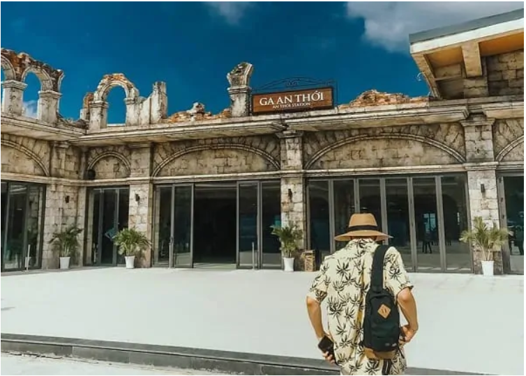
Ga An Thới. Ảnh: FB
Đi bằng máy bay tới Phú Quốc
Bạn có thể lựa chọn đi tàu ra đảo Phú Quốc từ các địa điểm như Rạch
Giá, Hà Tiên, đảo Nam Du (Kiên
Giang) hay Sông Đốc (Cà Mau) thay vì đi máy bay để tiết kiệm chi
phí. Với những bạn ở TPHCM hay các
tỉnh lân cận, thay vì đi máy bay thì bạn hãy đi xe khách tới Kiên
Giang hoặc Cà Mau rồi mua vé tàu thủy ra
đảo Phú Quốc nhé!
-
Giá vé tàu từ Rạch Giá đến Phú Quốc:
Người lớn 210.000 vnđ/vé, trẻ em từ 6 đến 11 tuổi 155.000
vnđ/vé
của hãng tàu Superdong. Địa chỉ số 01 Lô 4, Đường 3/2, Phường
Vĩnh Thanh Vân, TP. Rạch Giá. Liên hệ
đặt vé qua hotline 0297 3877 742.
-
Vé tàu thủy Hà Tiên – Phú Quốc:
Người lớn 230k/vé, trẻ em 170k/vé của hãng Superdong. Liên hệ
đặt vé
tàu Hà Tiên đi Phú Quốc qua hotline 0297 3955 933.
Phương tiện đi lại trên đảo Phú Quốc
Hiện tại ở Phú Quốc có rất nhiều cơ sở cho thuê xe máy để đáp ứng
cho nhu cầu đi lại của khách du lịch.
Theo
cẩm nang du lịch Phú Quốc
thì nếu thuê xe máy các bạn sẽ tiết kiệm được rất nhiều chi phí đi
lại
khi du lịch và còn chủ động hơn trong việc di chuyển nữa.
=> Thuê Xe Riêng Đưa Đón Sân Bay Quốc Tế Phú Quốc (PQC) đi Phú Quốc
ngay tại Klook với giá ưu đãi
lên tới 50%
TẠI ĐÂY
Nên ở đâu khi đi Phú Quốc? Khách sạn đẹp, tốt, chất lượng với
giá rẻ ở Phú Quốc
Nếu bạn vẫn chưa biết nên ở khu vực nào Phú Quốc, nên ở resort hay
khách sạn, mẹo săn vé giá rẻ đi đảo
ngọc Phú Quốc thế nào… thì hãy cùng tham khảo gợi ý dưới đây:
Du lịch Phú Quốc nên ở khu vực nào? Ở khách sạn hay resort?
Du lịch Phú Quốc nên ở resort hay khách sạn?
Tùy theo sở thích riêng của từng người, nếu bạn muốn
tận hưởng bầu không khí trong lành và gần gũi với thiên nhiên thì
nên ở resort, hơn nữa thích hợp với gia
đình hoặc nhóm đông người. Resort ở Phú Quốc được xây dựng thành
từng cụm như căn hộ, villa hay
bungalow… thích hợp để nghỉ dưỡng và yên tĩnh. Còn nếu muốn gần
trung tâm, sầm uất và không cần
không gian quá rộng bạn có thể chọn các khách sạn ở Phú Quốc.
Khách sạn – Resort ở Phú Quốc được chia 5 khu vực sau:
-
Khách sạn ở thị trấn Dương Đông -> gần chợ đêm, gần biển, đông vui
và nhộn nhịp cả về đêm lẫn ban ngày
-
Khu Mường Thanh, Novotel -> thích hợp để nghỉ dưỡng, bể bơi rộng,
yên tĩnh và đẹp
-
Khu bãi ông Lang, Cửa Cạn -> chủ yếu là resort giá rẻ nhưng hơi xa
khu vực trung tâm
-
Khu Vinwonders (Vinpearl) -> xa trung tâm, hội tụ đầy đủ dịch vụ
nghỉ dưỡng và vui chơi giải trí
- Khu hòn Dăm -> thích hợp để nghỉ trăng mật cho cặp đôi.
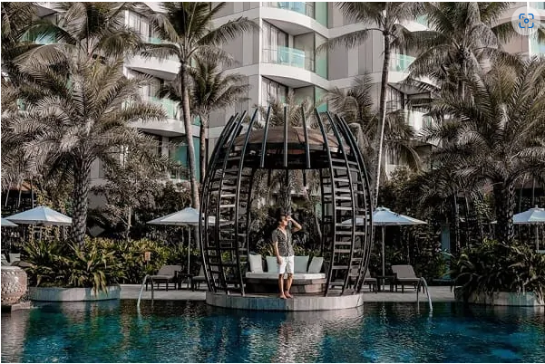
Khách sạn ở Phú Quốc. Ảnh: FB
Resort, khách sạn view đẹp, cao cấp và sang chảnh ở đảo Phú Quốc
Nếu đi theo gia đình và nhóm đông người, muốn tận hưởng dịch vụ cao
cấp, sang chảnh bạn có thể lựa
chọn những resort, khách sạn dưới đây:
-
Khu Nghỉ Dưỡng Radisson Blu Phú Quốc (Radisson Blu Resort Phu
Quoc)
Bai Dai Area,
Ganh Dau Commune, Phu Quoc District, Gành Dầu, Đảo Phú Quốc. Tiêu
chuẩn 5 sao, giá
phòng dao động từ
100$.
Địa chỉ ở mũi Ghành Dầu thích hợp với những du khách muốn khám
phá địa điểm này. Khu nghỉ dưỡng rộng và có thiên nhiên trong
lành, hồ bơi ngoài trời đẹp, đủ
tiện ích spa, sân golf. => Đặt phòng ngay để nhận ưu đãi giảm giá
chỉ còn
75$
TẠI ĐÂY
-
Khu Nghỉ Salinda Phú Quốc (Salinda Resort Phu Quoc Island)
ấp Cửa Lấp, xã Dương Tơ,
Cửa Lấp, Đảo Phú Quốc. Tiêu chuẩn 5 sao, giá phòng dao động
từ
100$.
Hồ bơi ngoài trời
rộng rãi, phòng view biển đẹp, phòng ốc sang chảnh được trang bị
đầy đủ tiện nghi, đủ dịch
vụ giải trí có phòng tập thể dục, buffet đa dạng…vv => Book phòng
ngay hôm nay chỉ từ
85$
Ở ĐÂY
-
InterContinental Phú Quốc Bãi Dài Resort
– Bãi Trường, Dương Tô, Đảo Phú Quốc. Tiêu
chuẩn 5 sao, giá phòng dao động từ
150$.
Resort tọa lạc ở bãi Dài với view biển đẹp, thuận
tiện tắm biển. Khách sạn được thiết kế độc đáo, bể bởi ngoài trời
đẹp và rộng rãi, nhà hàng
sang trọng, mọi dịch vụ đẳng cấp. Chi tiết về hình ảnh phòng, giá
cả và đặt phòng nhiều ưu
đãi chỉ từ
110$
Ở ĐÂY
-
The Shells Resort & Spa
– Phu Quoc – Bãi biển Gành Gió, Thị trấn Dương Đông, Ông Lang,
Đảo Phú Quốc. Tiêu chuẩn 5 sao, giá phòng dao động từ 406$. Mọi
dịch vụ, tiện nghi và
phòng ốc của khu nghỉ dưỡng được đánh giá cao. Để tận hưởng chuyến
nghỉ dưỡng tại resort
nổi tiếng này bạn có thể đặt phòng ngay với giá chỉ từ
82$
Ở ĐÂY
-
Vinpearl Phú Quốc:
Resort này thì không cần bàn cãi về độ nổi tiếng, đạt chuẩn 5
sao. Nằm tại
Bãi Dài, với tất cả các dịch vụ và tiện nghi: Hồ bơi (có cho trẻ
em riêng), spa, chèo thuyền, câu
cá, sân gofl tại chỗ, massage, gym, bida, tenis v.v. Nói chung là
đầy đủ tất cả, có cả dịch vụ
trông giữ trẻ v.v rất tiện cho các gia đình có con nhỏ. Ngoài mức
giá từ
70$
ra chắc chắn bạn
không cần bận tâm về bất cứ điều gì. => Đặt phòng ngay
Ở ĐÂY
-
Eden Resort Phu Quoc
Cửa Lấp, Dương Tơ, Cửa Lấp, Đảo Phú Quốc. Tiêu chuẩn 4 sao, giá
phòng dao động từ
60$
Khu nghỉ dưỡng đạt tiêu chuẩn 4 sao, gần bãi biển, nhà hàng cạnh
bãi biển thích hợp tổ chức đám cưới, đầy đủ tiện nghi về spa, nhà
hàng, phòng tập thể dục…
ĐẶT PHÒNG Ở ĐÂY
-
Novotel Phú Quốc Resort (Novotel Phu Quoc Resort)
– Tổ 05, Ấp Đường Bào, Xã Dương
Tơ, Huyện Phú Quốc, Tỉnh Kiên Giang. Tiêu chuẩn 5 sao, giá phòng
dao động từ 84$. Hệ
thống khách sạn Novotel được đánh giá cao với chất lượng và tiện
nghi mang tới chuyến nghỉ
dưỡng đáng nhớ cho du khách, đặt phòng
TẠI ĐÂY
hôm nay với giá chỉ từ
82$
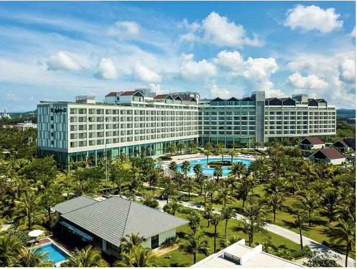
Resort ở đảo Phú Quốc
Khách sạn bình dân, phòng ổn và có giá tốt ở đảo ngọc Phú Quốc
Nếu có “túi tiền” bình dân hơn bạn có thể tham khảo những khách sạn
có giá tầm trung, đầy đủ tiện nghi
dưới đây:
-
Khách sạn Stellar Hotel:
địa chỉ số 63 Trần Hưng Đạo, nằm cách bãi tắm chỉ khoảng 170m,
nằm cách chợ
đêm Phú Quốc và mũi Dinh Cậu chỉ khoảng 600m nên bạn có thể đi bộ
đi chơi buổi tối chứ không cần đi xe
máy hay thuê taxi. Giá phòng cho một đêm ở khách sạn Stellar Hotel
Phú Quốc chỉ khoảng từ
19$
, bạn
được ăn sáng miễn phí còn phòng thì nội thất hiện đại với diện
tích từ 25m2.
-
Khách sạn Hiệp Thoại:
Địa chỉ 65 Trần Hưng Đạo, là khách sạn tốt nhất chọn bạn với ngân
sách thấp. Giá
thấp nhất khoảng
$17,
vị trí cực tốt, thuận tiện. Nội thất phòng ở mức tạm ổn, khách
sạn có quy mô 12
phòng, gần sát bãi biển. Có sẵn dịch vụ cho thuê xe máy nên khá
tiện nếu bạn đi du lịch và muốn tự trải
nghiệm, tiết kiệm chi phí.
-
Khách sạn Galaxy:
Địa chỉ 77 Trần Hưng Đạo, cùng chung một con đường với khách sạn
Hiệp Thoại trên,
cả 2 đều có vị trí tốt. Khách sạn này to hơn, với 33 phòng và cũng
rộng rãi, đẹp hơn. Mức giá thấp nhất
khoảng
$29
, có hồ bơi khá, nhân viên nhiệt tình và thân thiện. Đây là khách
sạn được chọn nhiều thứ 2 ở
Phú Quốc.
-
Montana Resort:
Là dạng resort cơ bản, giá rẻ nhưng vẫn đảm bảo cho bạn một sự
thoải mái nhất định. Có
vườn thoáng, tiện nghi, hồ bơi. Nếu bạn muốn thư giãn sau thời
gian dài tất bận, chặt chội ở thành phố
nhưng chỉ có kinh phí thấp thì đây là sự lựa chọn khá ổn. Giá thấp
nhất khoảng
$28
=> Thêm nhiều sự lựa chọn về khách sạn giá rẻ ở Phú Quốc:
Khách sạn giá rẻ, đẹp nhất thị trấn Dương
Đông, Phú Quốc
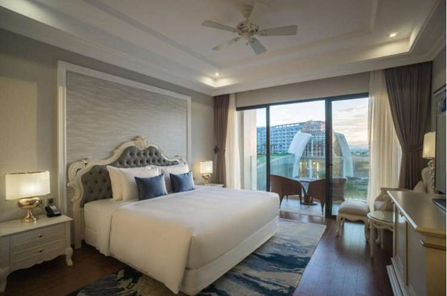
Cận cảnh phòng tại khách sạn
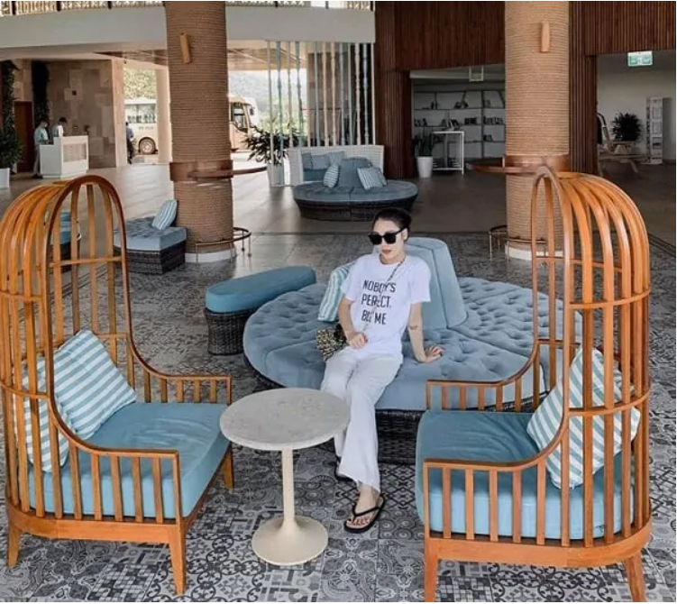
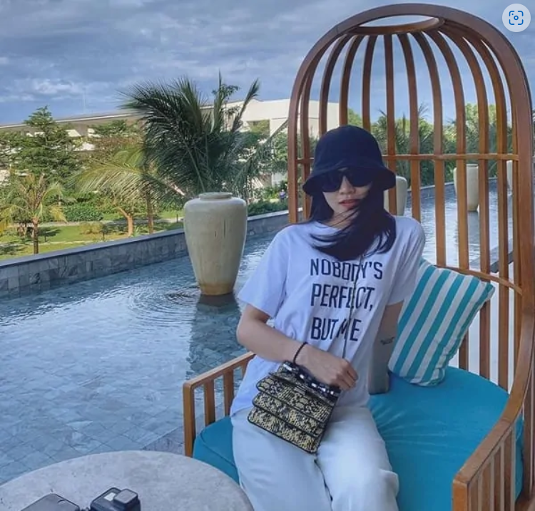
Check-in tại khách sạn. Ảnh: FB
Bản đồ du lịch Phú Quốc 2022
Trước khi đến Phú Quốc, mọi người hãy cùng xem qua
bản đồ du lịch
Phú Quốc
để lên
lịch trình du lịch Phú Quốc tự túc
sao cho hợp lý, tiết kiệm tiền đi lại lẫn thời gian nhé!
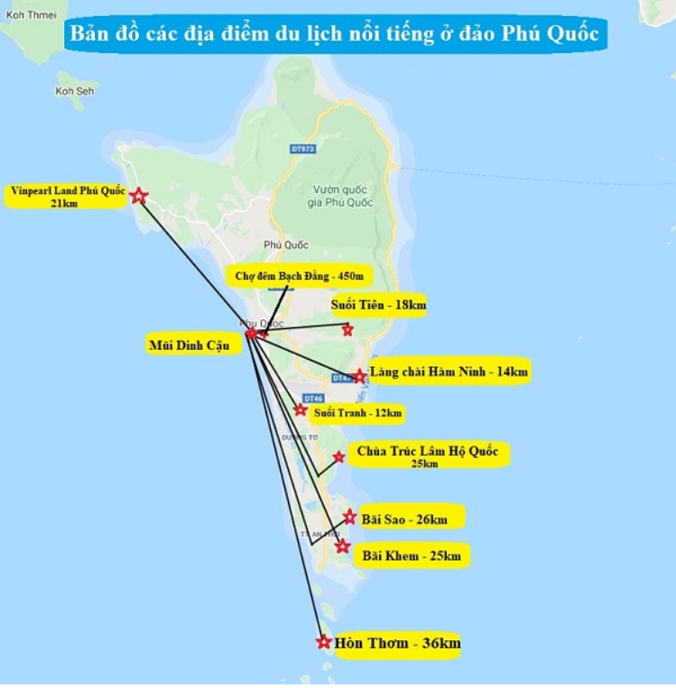
Bản đồ các địa điểm tham quan ở Phú Quốc
Nên đi đâu chơi/ Những địa điểm tham quan đẹp ở Phú Quốc
Các địa điểm du lịch ở Phú Quốc
tập trung thành ba nhóm chính là: Đông Đảo, Bắc Đảo và Nam Đảo.
Dưới đây, là gợi ý về địa điểm theo từng khu vực các bạn có thể tham
khảo:
Các địa điểm nổi tiếng ở đảo Phú Quốc
Địa điểm tham quan ở khu vực Đông Đảo, Phú Quốc
+ Làng chài Hàm Ninh với những nét cổ kính của làng chài ngày xưa,
đặc biệt làng chài còn là nơi lý
tưởng để ngắm bình minh hoặc hoàng hôn. Tại đây có bán rất nhiều loại
hải sản ngon nổi tiếng bạn có
thể thưởng thức hoặc mua về làm quà. Nước biển ở đây rất trong và
sạch, có thể nhìn thấy những đàn cá
cơm tung tăng vui đùa.
Thỏa sức tắm mát. Ảnh: FB
+ Cảnh đẹp Phú Quốc 2022 tiếp theo phải kể tới khu du lịch Suối Tranh
nổi tiếng với nước rất trong nằm
giữa rừng cây xanh tươi tạo nên một bức tranh tuyệt đẹp. Tuy nhiên, nếu
đi vào mùa khô sẽ không có
nước, khu du lịch suối tranh nổi tiếng với quả bồ quân rất ngon và ngọt,
nếu có dịp ghé thăm nên thưởng
thức.
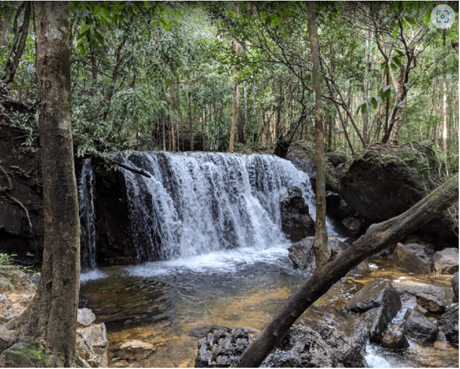
Khu du lịch Suối Tranh Phú Quốc
+ Cơ sở sản xuất nước mắm Phú Quốc nổi tiếng với những cơ sở sản xuất
nước mắm ngon và đặc biệt, tới
đây bạn sẽ được tham quan những nhà thùng lớn để khám phá quy trình làm
mắm.
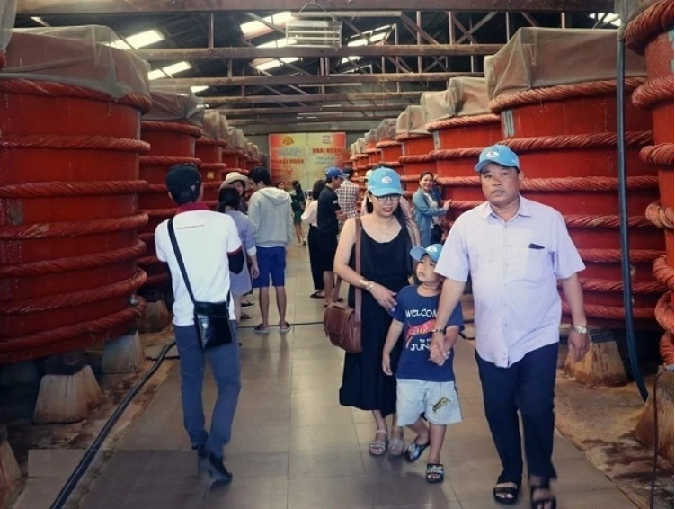
Tham quan cơ sở sản xuất nước mắm ở Phú Quốc
+ Tham quan chùa Trúc Lâm Hộ Quốc: đây là ngôi chùa được xây ven biển
với view cực đẹp để bạn vừa
có thể tới lễ phật cầu bình an vừa có thể ngắm cảnh, check in thả
ga.
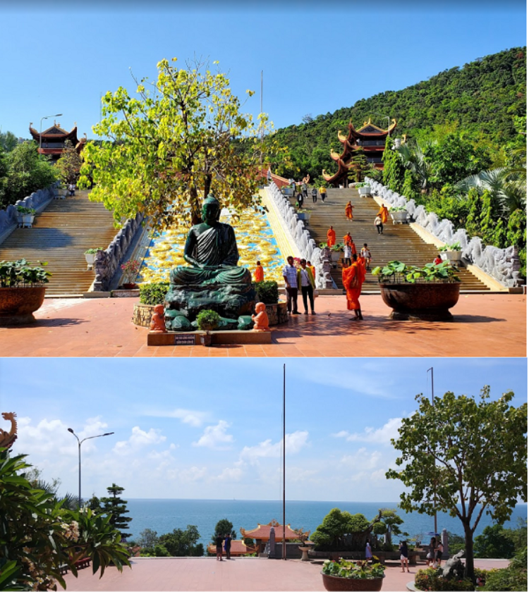
Chùa Trúc Lâm Hộ Quốc ở đảo Phú Quốc
Địa điểm tham quan ở khu vực Bắc Đảo
+ Phú Quốc nổi tiếng với những vườn tiêu cay nồng, có mùi thơm đặc trưng
khác biệt so với những nơi
khác. Tới đây, bạn sẽ được chiêm ngưỡng những vườn tiêu xanh mượt và có
cơ hội lưu giữ những bức ảnh
đẹp bên vườn tiêu tuyệt đẹp.
+ Chơi gì ở Phú Quốc? Cách trung tâm đường Dương Đông đi Bắc Đảo khoảng
4,5km là khu nuôi dưỡng
chó xoáy Phú Quốc, sở dĩ gọi là chó xoáy là vì trên lựng của loài chó
này có rất nhiều lông xoáy. Tới đây
bạn sẽ được tham quan đời sống hoang dã của loài chó quý hiếm và nổi
tiếng này, nếu là người yêu thích
động vật bạn có thể mua một chú chó xoáy về nhé.
=> Tour Tham Quan Đảo Phú Quốc Trong Ngày Bằng Tàu Cao Tốc tại Klook ưu
đãi về giá TẠI ĐÂY
Đi cáp treo nhìn toàn cảnh đảo Phú Quốc xinh đẹp. Ảnh: FB
+ Rừng quốc gia Phú Quốc để khám phá những thú vị trong rừng, không khí
mát mẻ và khung cảnh thực
vật vô cùng phong phú và đa dạng.
+ Tới Mũi Gành Dầu để chiêm ngưỡng thiên nhiên hoang sơ tuyệt đẹp của
mũi đất nhô ra từ biển, đặc biệt
từ đây bạn có thể nhìn thấy được hải giới của Campuchia. Đây cũng là địa
điểm check-in ở Phú Quốc hấp
dẫn du khách hiện nay.
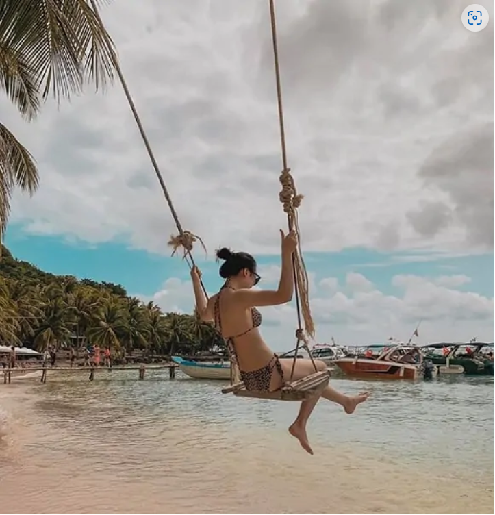
Những rặng dừa cao xanh vút ở Phú Quốc. Ảnh: FB
Địa điểm tham quan ở khu vực Nam đảo
+ Tới Nam đảo Phú Quốc không thể không ghé thăm nhà tù Phú Quốc nơi ghi
lại dấu ấn lịch sử hào hùng
của dân tộc.
+ Hay tới khu trưng bày ngọc trai Cội Nguồn tới đây bạn sẽ được khám phá
những cơ sở nuối cấy Ngọc
Trai tuyệt đẹp, đặc biệt được xem quy trình lấy ngọc trai.
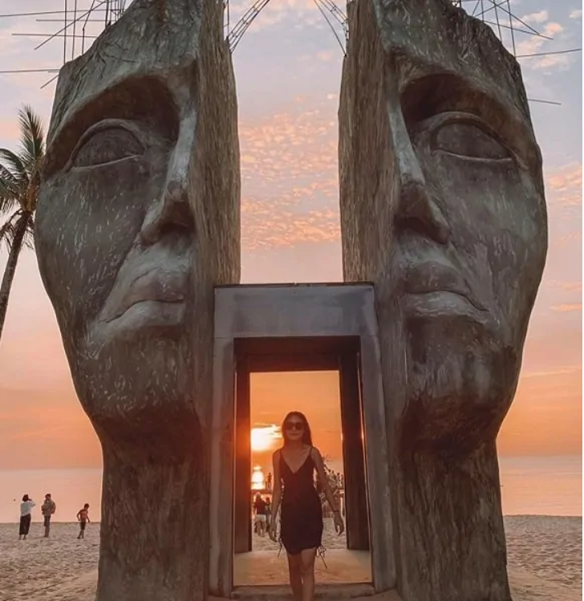
Check-in sống ảo. Ảnh: Fb
+Du lịch Nam Đảo Phú Quốc có gì chơi?
Hoặc tới cảng An Thới để được câu cá thư giãn và ngắm những
rặng san hô tuyệt đẹp.
+ Bãi Sao ở Phú Quốc nổi tiếng với những bãi cát trắng mịn, nước biển
trong vắt có thể nhìn thấy tận đáy.
Nếu bạn là người yêu thích biển không thể bỏ qua địa điểm này.
=> Trải nghiệm Lặn Biển và Câu Cá ở Nam Phú Quốc khi mua vé tại Klook Ở
ĐÂY
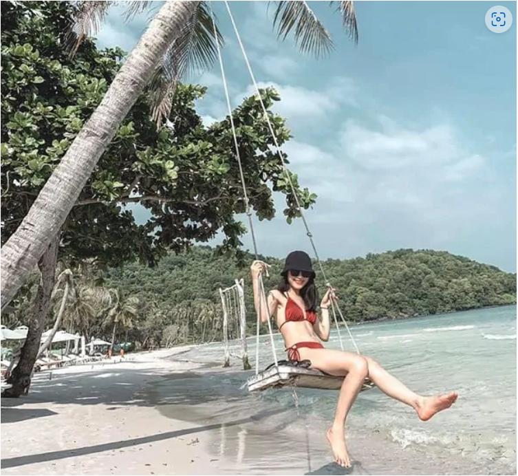
Sống ảo cùng biển Phú Quốc. Ảnh: FB
Những hoạt động vui chơi ở Phú Quốc
Du lịch đảo Phú Quốc có gì chơi?
Cùng với khám phá những địa danh du lịch nổi tiếng, các bạn cũng có
thể tham gia những hoạt động vui chơi, giải trí hấp dẫn khi ghé thăm đảo
ngọc này đó là:
+ Lặn ngắm san hô dưới biển với những rặng san hô tuyệt đẹp.
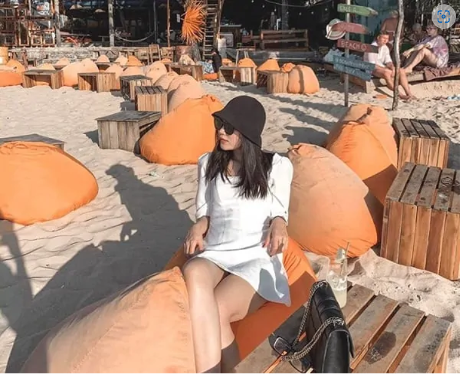
Check-in trên bờ biển. Ảnh: FB
+ Câu cá trên biển không chỉ giải trí mà bạn có thể thưởng thức thành
quả của mình ngay trên thuyền nữa
đấy hoặc câu mực cũng rất thú vị. Ở Phú Quốc có rất nhiều dịch vụ tour
câu cá, câu mực đêm chỉ với
khoảng 220k/người đã bao gồm ăn tối và đi thuyền ngắm hoàng hôn. Bạn có
thể đặt tour câu mực ở Phú
Quốc TẠI ĐÂY để hưởng ưu đãi giảm giá tới 100k.
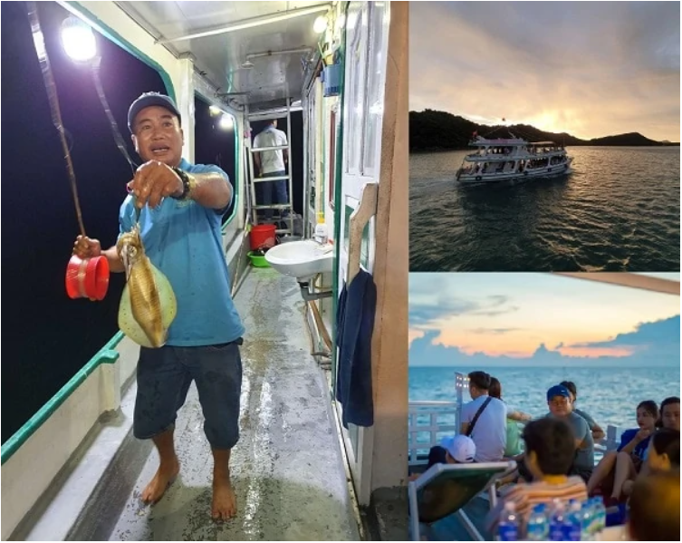
Tour câu mực đêm và ngắm hoàng hôn ở Phú Quốc
+ Hay tới vườn quốc gia để trải nghiệm du lịch sinh thái và khám phá các
hòn đảo nổi tiếng, Hòn Dăm,
giếng Ngự, mũi Ông Đội…
Ảnh: FBNV
+ Khu vui chơi giải trí Vinwonders Phú Quốc (Vinpearl Phú Quốc)
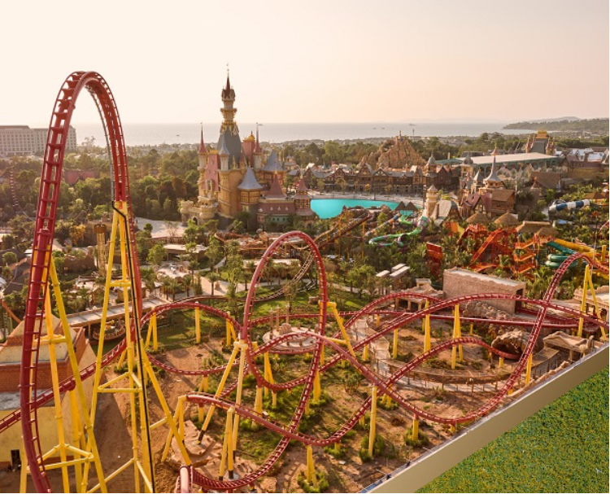
Toàn cảnh Vinwonder Phú Quốc từ trên cao
Khu vui chơi giải trí Vinwonders
Phú Quốc
được thiết kế độc đáo trên nền diện tích lên tới 170.000m2 với
các tổ hợp vui chơi giải trí: Công viên nước, sân khấu nhạc nước, thủy
cung, khu vui
chơi trong nhà, khu vui chơi ngoài trời….Đây chính là khu vui chơi giải
trí lớn và hấp dẫn nhất trên đảo Phú Quốc mà bạn không
thể bỏ qua.
Safari Phú Quốc. Ảnh: FB
Các trò chơi ở Vinwonders Phú Quốc
- Công viên nước Vinwonders Phú Quốc
- Khu thể thao ngoài trời
- Thủy cung Vinwonders Phú Quốc
- Khu biểu diễn
- Khu vui chơi trong nhà
- Phố mua sắm
=> Đặt mua
vé tham quan, vui chơi ở Vinwonders Phú Quốc online
tại đây
để không phải mất thời gian
xếp hàng mua vé và hưởng ưu đãi giảm giá lên tới 500k.
Mua sắm ở Phú Quốc/ Nên mua gì làm quà khi đi Phú Quốc
Mua gì làm quà khi du lịch Phú Quốc?
Bạn có thể tới chợ đêm Dinh Cậu hay chợ An Thới, chợ Dương
Đông để mua hải sản tươi sống, cá khô, mực khô… hoặc tới khu trưng bày
cội nguồn để mua những món
quà lưu niệm, hàng thủ công mỹ nghệ, đồ trang sức được làm từ ngọc
trai…
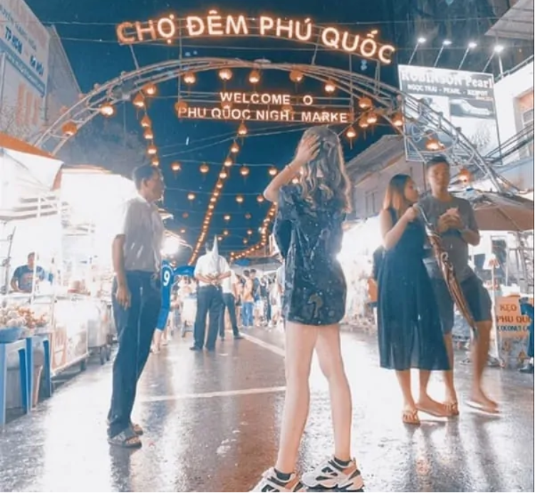
Chợ đêm Phú Quốc. Ảnh: FB
Làng Chài Hàm Ninh: có các đặc sản như hải mã sống ngâm rượu, nấm tràm,
rượu thuốc được ngâm từ
quả dứa biển và trái mỏ quạ và ghẹ Hàm Ninh nổi tiếng.
Khu trưng bày cội nguồn, có những gian hàng bán đồ trang sức được làm từ
ngọc trai, quà lưu niệm, hàng
thủ công…
=> Để chi tiết về mua quà cũng như địa chỉ ở Phú Quốc, các bạn có thể
tham khảo tại:
Du lịch Phú Quốc
nên mua gì làm quà, gợi ý địa chỉ mua sắm?
Du lịch Phú Quốc về ẩm thực/Món ăn ngon ở Phú Quốc
Nên ăn gì khi du lịch Phú Quốc?
Du lịch biển Phú Quốc bên cạnh những món ăn từ hải sản, các bạn sẽ
được thưởng thức rất nhiều món ngon đặc sản khác. Dưới đây, là gợi ý về
những món ăn nổi tiếng ở Phú
Quốc
các bạn có thể tham khảo:
+ Hải sản tươi sống:
Phú Quốc bao quanh là biển cả nên bạn sẽ được thưởng thức rất nhiều món
hải sản
tươi ngon từ cua, ghẹ, ốc, mực, tôm, sò, hàu, nhum,…Bạn nên chọn những
quán ăn có sẵn các bể hải sản
tươi sống, thích ăn con nào thì tự chọn chứ đừng vào mấy quán nhỏ không
có sẵn bể hải sản, ăn mấy
quán đó hầu như chỉ là đồ đông lạnh thôi.
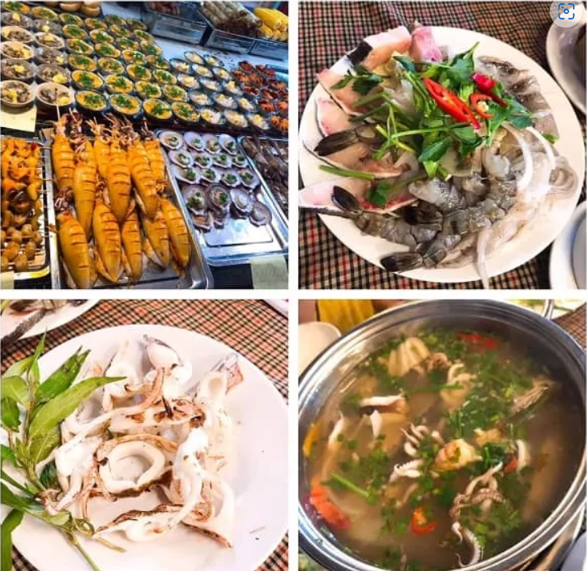
Đủ các món hải sản tươi ngon. Ảnh: FB
+ Gỏi cá trích:
Là món ăn khoái khẩu ở Phú Quốc, với hương vị thơm ngon cửa rau rừng,
vị béo của dừa và
miếng cá giòn ngọt. Gói cá trích có mức giá trung bình 30k/đĩa cho 2
người ăn.
Địa chỉ ăn gỏi cá trích ngon ở Phú Quốc như:
- Lê Giang (đường Trần Hưng Đạo – KP1 – TT Đông Dương).
- Trùng Dương – khu phisi 1 đường 30-4, thị trấn Đông Dương.
- Vườn Táo – P. Cửa Lấp, xã Dương Tơ, huyện Phú Quốc.
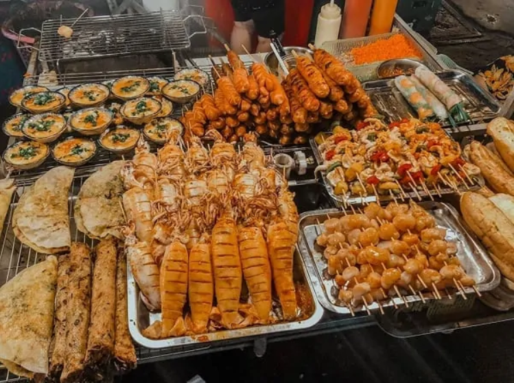
Thưởng thức đủ các món ăn vặt. Ảnh: FB
+ Ghẹ Hàm Ninh:
Đặc sản Phú Quốc
phải kể tới ghẹ Hàm Ninh có giá từ 100-150k/kg tùy theo to hay
nhỏ. Kinh nghiệm du lịch Phú Quốc, bạn nên lựa chọn loại khoảng 6-7
con/kg.
Nhà hàng hải sản ngon ở Phú Quốc
với món ghẹ Hàm Ninh thì bạn có thể tới nhà hàng Làng Chài Hàm
Ninh, ấp Rạch Hàm, trung tâm Hàm Ninh.
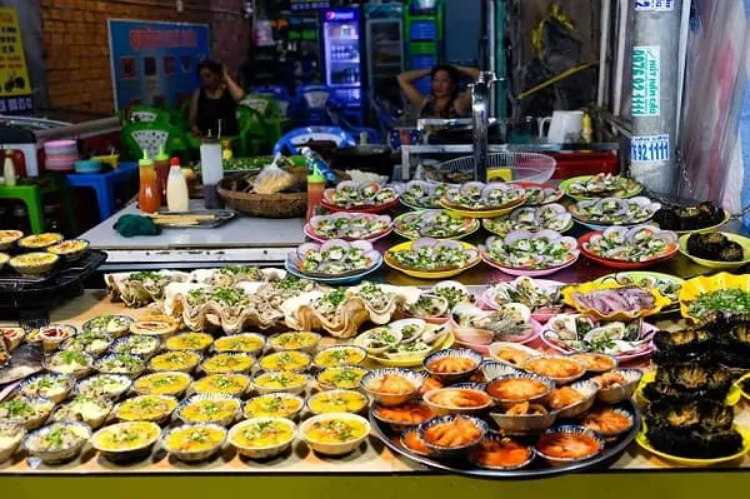
Ăn vặt ở Phú Quốc. Ảnh: FB
+ Ốc hương nướng muối ớt, sò quạt nướng mỡ hành, mực trứng nướng… cũng
là những món ngon bạn
nên thưởng thức khi ghé thăm Phú Quốc. Mỗi món ăn có giá bình dân từ
30-50k/đĩa. Ngoài ra, bạn có thể
thưởng thức tại quán Nghêu sò ốc hến gần Trường cấp 3 Phú Quốc cũng là
điểm đến yêu thích của nhiều
du khách.
Ngoài ra, bạn có thể thưởng thức món còi biên mai nướng có giá từ
40-70k/suất hoặc món nấm tràm.
=> Xem thêm
Đặc sản Phú Quốc – đến đảo Phú Quốc ăn gì?
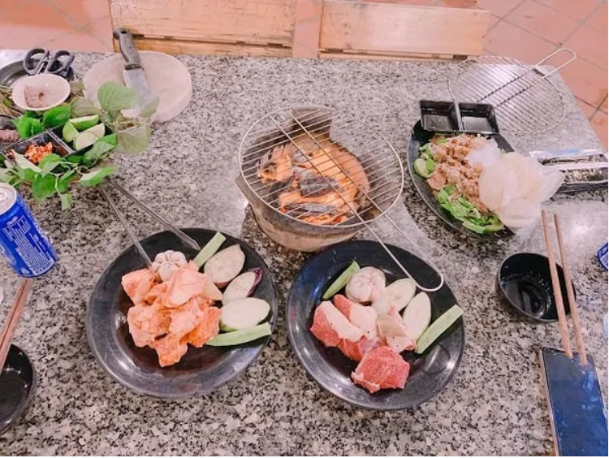
Thưởng thức đồ nướng ở Phú Quốc. Ảnh: FB
Địa chỉ, quán ăn ngon ở Phú Quốc
nổi tiếng và đông khách các bạn có thể tham khảo:
-
Quán ăn Quốc Anh, trung tâm Đảo Ngọc, trên đường 30-4 – khu phố I, thị
trấn Dương Đông. Quán phục vụ
nhiều món ngon đặc sản như: Cơm ghẹ, lẩu nấm Tràm, bún ghẹ, hải sản…
-
Nhà hàng Zen: 30-4 thị trấn Đông Dương. Các bạn có thể gọi theo món
có: Gỏi hải sản, cơm hải sản giá rẻ
từ 35-45k/đĩa.
- Nhà hàng Gió Biển: Bãi Mũi Dương – Chuồng Vích – Gành Dầu.
-
Nhà hàng Việt Xưa: Hùng Vương – Dương Đông – Phú Quốc. Bạn sẽ được
thưởng thức những món đặc
trưng như tôm hấp lá dừa, gỏi xoài xanh hải sản, mực chiên giòn xốc
trứng muối, gỏi cá trích…
=> Xem thêm
Địa chỉ quán ăn ngon rẻ, đông khách ở Phú Quốc
Một số lưu ý, review du lịch Phú Quốc cần biết
Để có chuyến du lịch Phú Quốc thuận lợi, suôn sẻ, kinh nghiệm du lịch
Phú Quốc, thì đây là một số lưu ý
bạn đừng quên:
-
Để thuận tiện cho chuyến du lịch bạn nên mua một chiếc bản đồ du lịch
Phú Quốc.
- Trước khi đi nên kiểm tra thời tiết để có cách sắp xếp hợp lý.
- Mang theo một số vật dụng cần thiết như đồ bơi, kem chống nắng…
-
Tuyệt đối không được tắm biến vào buổi trưa và tránh ngâm mình dưới
nước quá lâu.
-
Nếu mua các sản phẩm từ ngọc trai nên kiểm tra kĩ trước khi mua tránh
mua phải hàng giả.
-
Nên đi đến những khu vực đã khai thác cho tham quan, không đi vào
những khu vực rừng cấm hoặc các địa
điểm chưa khai thác. Các bạn có thể tham khảo thêm một số
Các bạn có thể tham khảo thêm một số kinh nghiệm du lịch Phú Quốc khác
như:
-
Cách di chuyển tới đảo Phú Quốc
-
Khách sạn đẹp, chất lượng ở Phú Quốc
-
Du lịch Phú Quốc dịp tết Âm Lịch
Du lịch Phú Quốc
là địa điểm du lịch vô cùng hấp dẫn, tới đây bạn sẽ được trải nghiệm
những phút giây
tuyệt vời nhất sau những ngày làm việc căng thẳng. Hy vọng với những
chia sẻ về
kinh nghiệm du lịch
Phú Quốc tự túc 2022
trên sẽ giúp ích cho các bạn những thông tin cần thiết trong chuyến đi
của mình.
Trả lời
Email của bạn sẽ không được hiển thị công khai. Các trường bắt buộc được
đánh dấu *
Bình luận *